Environmental & Climate Researcher
ARKRAJBiswas
My path into environmental research started with agriculture. Since then, my work has moved through Earth and atmospheric sciences, geospatial analysis, forestry and environmental policy. I am interested in understanding environmental change through field evidence, spatial data and practical research.
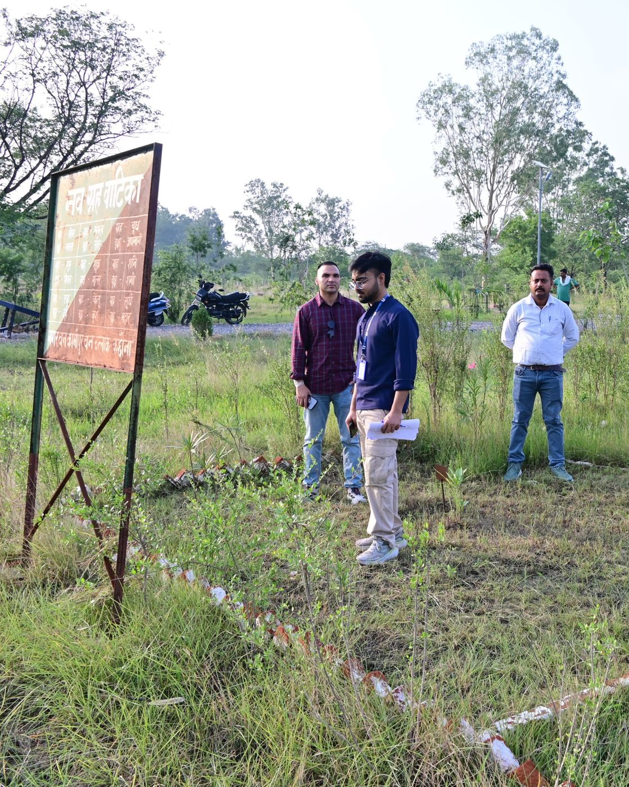
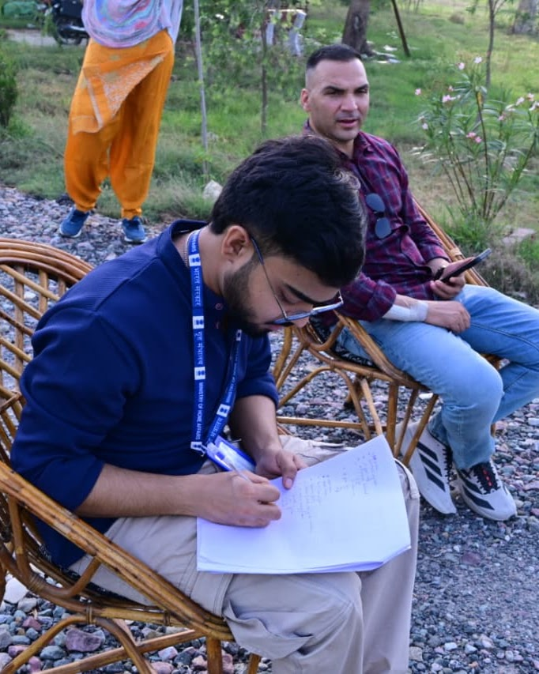
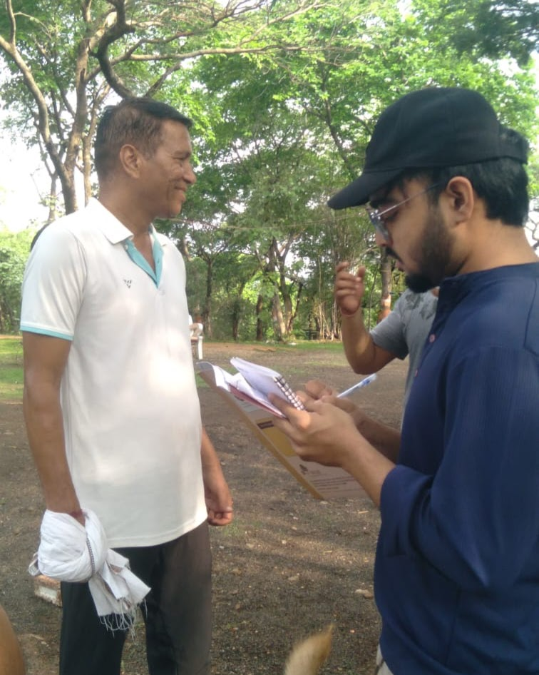
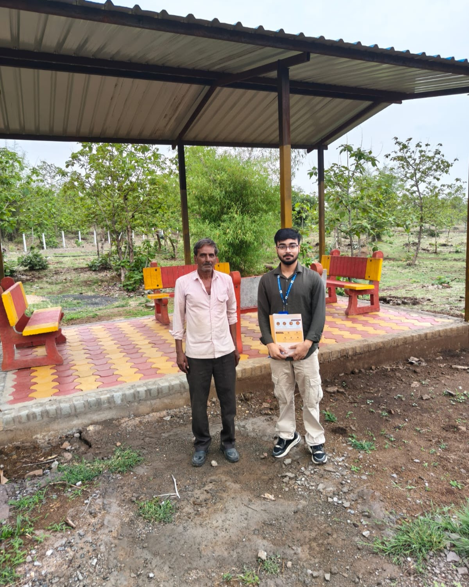
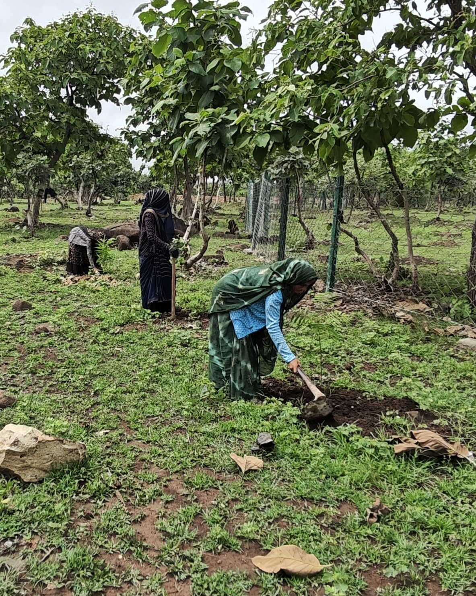
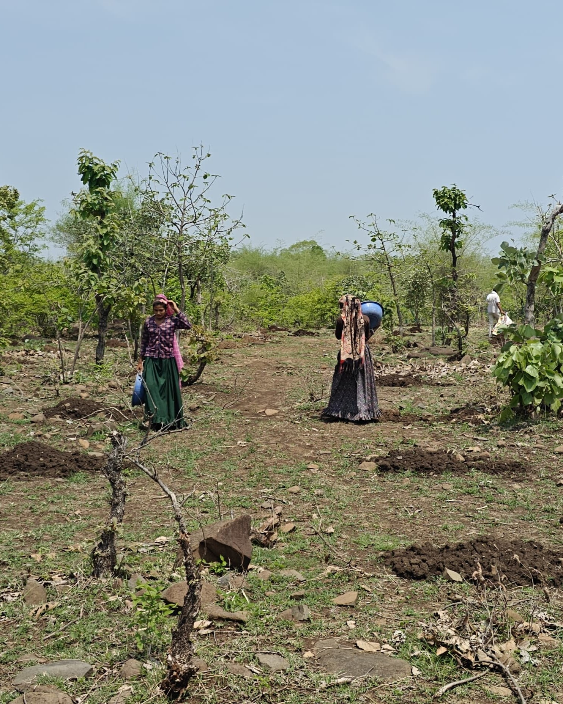
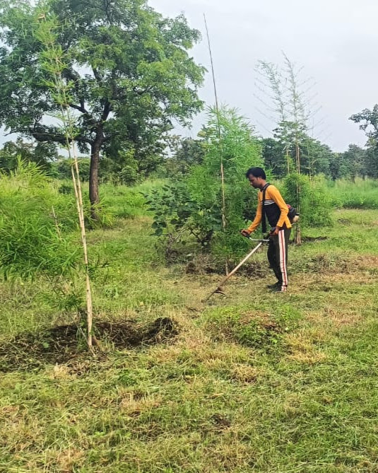
.jpg)
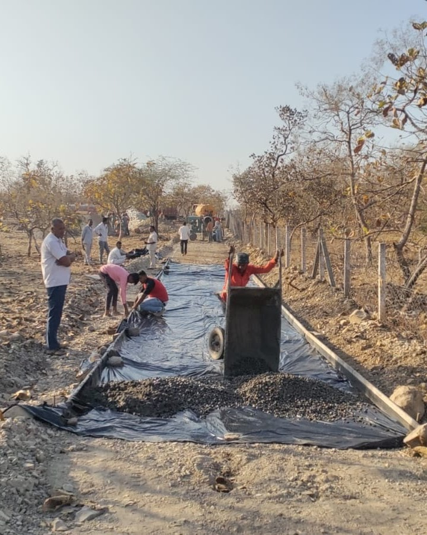
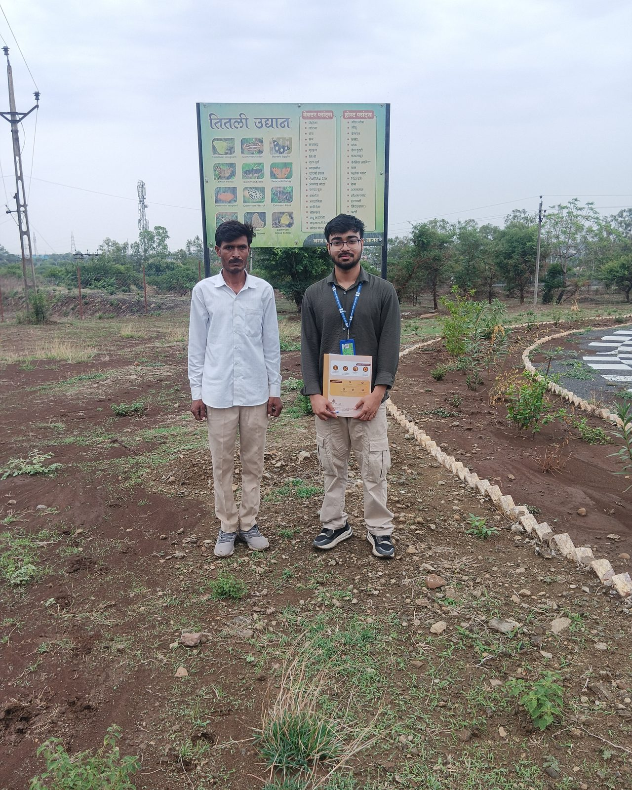
.jpg)
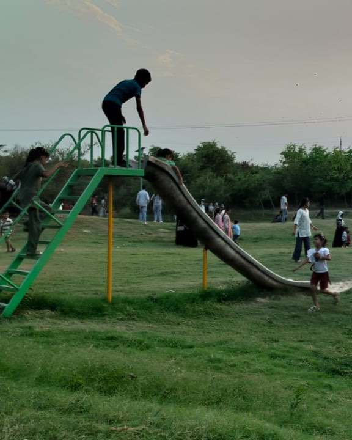
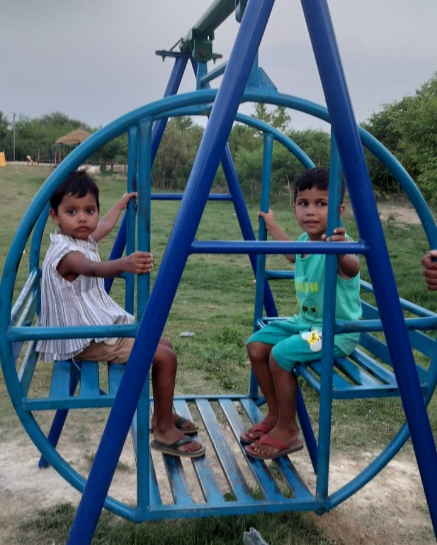
Areas of work
What I work around
Connected questions across landscapes, cities and policy.
Climate & Environmental Change
Understanding environmental change and the ways it affects landscapes and human systems.
→ 02Urban Environment
Studying urban heat, green spaces and changing urban landscapes through spatial analysis.
→ 03GIS & Remote Sensing
Using satellite imagery, GIS and quantitative analysis to understand environmental patterns.
→ 04Forestry & Sustainability
Researching urban forestry, environmental benefits and sustainability-oriented interventions.
→ 05Agriculture & Land Systems
Building on my background in agricultural sciences to explore environmental questions connected to land and livelihoods.
→ 06Environmental Policy
Connecting environmental evidence with policy evaluation, planning and implementation.
→How I approach research
Research, from different angles.
I am interested in research that does not stay inside one discipline. Some questions are best answered with satellite data and spatial analysis; others need field evidence, policy reading or a better understanding of how people experience a landscape. Much of my work sits somewhere between those approaches.
Current research · Ongoing
Human-centric urban forestry
National CAMPA project on the Nagar Van Yojana. Methodology shown — findings follow as confirmed.
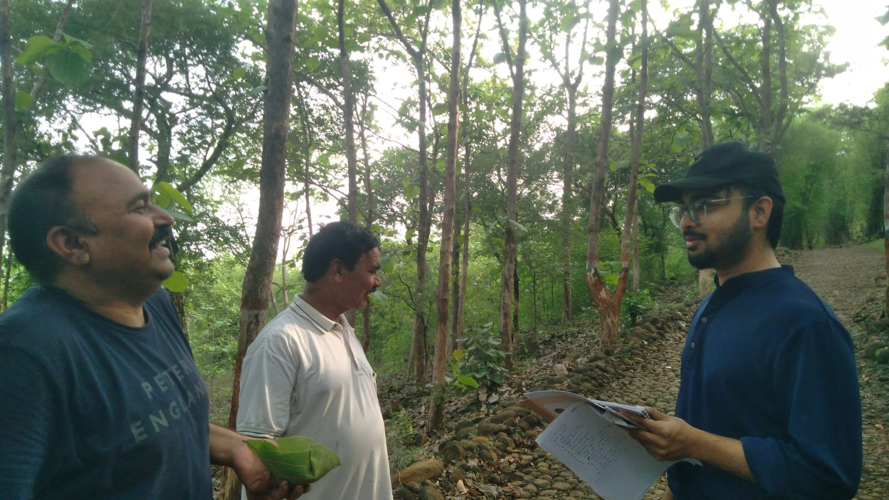
Ongoing
Strategic Framework for Human-Centric Urban Forestry
Evaluating the socio-economic, psychological and governance outcomes of the Nagar Van Yojana — through GIS-based audits, socio-economic surveys, psychological well-being assessments, and attention to climate resilience, community well-being and participatory governance, towards a monitoring framework.
Open the entry →Selected work
Projects & writing
Verified assessments, studies and briefs. Full archive →
Selected Writing
2026Nagar Van Yojana: The challenge of maintaining India’s urban forests
Down To Earth · 15 October 2026 · Published Article
An evidence-based analysis of the maintenance challenges facing India’s urban forests, examining delayed funding, frontline workers, sustainable infrastructure and community-led management, with lessons from field research across Uttar Pradesh, Madhya Pradesh and Rajasthan.
articleRead article ↗ 2026The Etawah design: An 123-acre urban forest as its lungs
Question of Cities · 4 September 2026 · Published Article
articleRead article → 2026When a Forest Knows Your Zodiac Sign
CSR Times · August 2026 · Opinion
articleRead note → 2026Enhancing Urban Forestry: Field Evidence and Implementation Recommendations
SSRN Working Paper · Policy Brief
briefRead note →Live environmental data · Micrometeorology & Atmospheric Chemistry
Earth / Now
Real-time boundary-layer state and air quality, read like a scientist.
New Delhi, India
28.61°N, 77.21°E · Elev 216 m
28.4 °C
Clear sky · Dry-bulb surface air temperature (2 m)
- Apparent / Feels
- 29.1 °CDew point: 15.8 °C
- PM2.5 (CAMS)
- 42.0 µg/m³2.8× WHO 24h limit
- PM10 & NO₂
- 86 µg/m³NO₂: 18.4 µg/m³
- Rel. Humidity
- 46 %Cloud cover: 12%
- Wind (10 m)
- 11.2 km/h295° WNW · 3.1 m/s
- Precipitation
- 0.0 mmCurrent hour flux
- UV Index / Solar
- 5.4Moderate irradiance
- Surface Pressure
- 986.4 hPaSLP: 1011.2 hPa
Long-term climate data
Climate Lens
Explore climate conditions through long-term environmental data. Historical gridded reanalysis estimates — no trend claims.
Bengaluru, India
Example location — search for another place below.
This comparison overlays daily values for the same calendar dates across years. It is intended to support visual comparison of seasonal patterns; it is not a weather forecast and does not by itself establish a long-term climate trend.
Data table
Historical gridded reanalysis estimates — not direct observations from a local weather station. ERA5-Land (~11 km) for temperature and humidity; ERA5 (~25 km) for precipitation and solar radiation.
— public occurrence records · —
Global climate record
Global Climate Signal
Explore the long-term global temperature record.
—
Loading the global record…
Data table
These are monthly global land–ocean temperature anomalies relative to the NASA GISTEMP 1951–1980 baseline. They describe long-term global temperature variation, not local daily weather. Data: NASA GISS GISTEMP v4.
Profile
A little about me.
I started out in Agricultural Sciences before moving into Earth and Atmospheric Sciences at Banaras Hindu University. My work has since expanded into environmental research, GIS, sustainability and policy. Today, I work as a Research Associate with National CAMPA under the Ministry of Environment, Forest and Climate Change, where I work on environmental analysis, monitoring, policy evaluation and documentation.
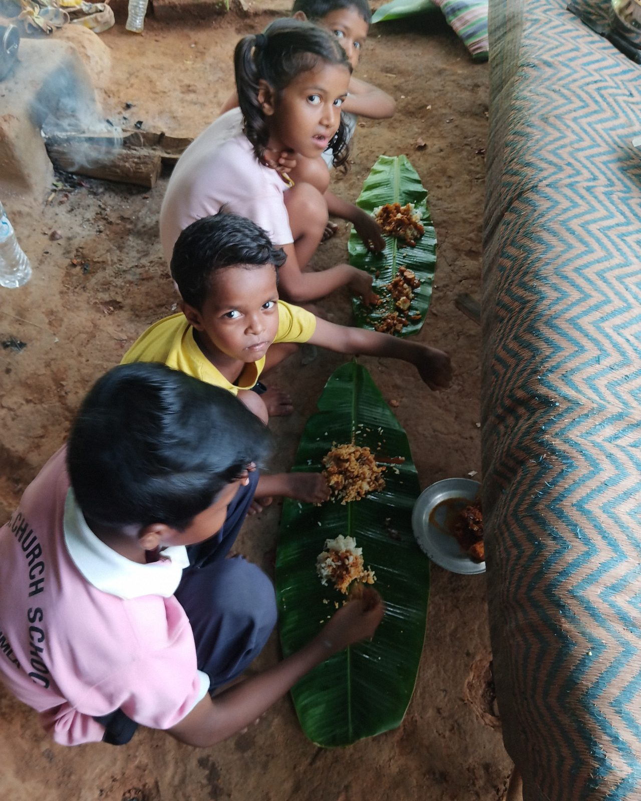
Have a research question, project or idea? Let's talk.
Research collaboration, environmental projects and professional opportunities.
Get in touch →